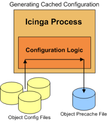
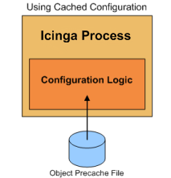

Es gibt einige Dinge, die Sie tun können, um die Zeit zu verringern, die Icinga zum (Neu-)Start benötigt. Diese Beschleunigung umfasst u.a. Änderungen bei der Verarbeitung Ihrer Konfigurationsdateien.
Diese Techniken zu benutzen ist besonders dann sinnvoll, wenn bei Ihnen einer oder mehrere der folgenden Punkte zutreffen:
große Konfigurationen
komplexe Konfigurationen (massiver Einsatz von Template-Features)
Installationen, bei denen häufige Neustarts notwendig sind
Bei jedem (erneuten) Start von Icinga müssen die Konfigurationsdateien verarbeitet werden, bevor die Überwachung beginnen kann. Dieser Konfigurationsanlaufprozess umfasst eine Reihe von Schritten:
Lesen der Konfigurationsdateien
Auflösen von Template-Definitionen
"Recombobulating" Ihrer Objekte (ein [ausgedachter] Begriff für die verschiedenen Arten von Arbeiten, die auftreten)
duplizieren von Objektdefinitionen
vererben von Objekteigenschaften
sortieren Ihrer Objektdefinitionen
überprüfen der Objektbeziehungsintegrität
prüfen von zirkulären Pfaden
und mehr...
Einige dieser Schritte können ziemlich zeitintensiv sein, wenn Sie große oder komplexe Konfigurationen haben. Gibt es einen Weg, einen dieser Schritte zu beschleunigen? Ja!
Bevor wir weitermachen, die Dinge zu beschleunigen, müssen wir sehen was möglich ist und ob wir uns mit der ganzen Sache beschäftigen sollten oder nicht. Das ist einfach - starten Sie Icinga mit der -s oder --test-scheduling-Option, um Zeiten und Planungsinformationen zu bekommen.
Es gibt eine zusätzliche Option -S oder --show-scheduling. Damit erhalten Sie weitere Informationen zur Scheduling Queue.
Ein Beispiel für die Ausgabe (gekürzt, um nur relevante Teile zu zeigen) sehen Sie nachfolgend. In diesem Beispiel nutzen wir eine Icinga-Konfigurations mit 25 Host und etwas mehr als 10.000 Services.
#> /usr/local/icinga/bin/icinga -s /usr/local/icinga/etc/icinga.cfg
Icinga 1.14
Copyright (c) 1999-2007 Ethan Galstad (http://www.nagios.org/)
Last Modified: 01-27-2007
License: GPL
Timing information on object configuration processing is listed
below. You can use this information to see if precaching your
object configuration would be useful.
Object Config Source: Config files (uncached)
OBJECT CONFIG PROCESSING TIMES (* = Potential for precache savings with -u option)
----------------------------------
Read: 0.486780 sec
Resolve: 0.004106 sec *
Recomb Contactgroups: 0.000077 sec *
Recomb Hostgroups: 0.000172 sec *
Dup Services: 0.028801 sec *
Recomb Servicegroups: 0.010358 sec *
Duplicate: 5.666932 sec *
Inherit: 0.003770 sec *
Recomb Contacts: 0.030085 sec *
Sort: 2.648863 sec *
Register: 2.654628 sec
Free: 0.021347 sec
============
TOTAL: 11.555925 sec * = 8.393170 sec (72.63%) estimated savings
Timing information on configuration verification is listed below.
CONFIG VERIFICATION TIMES (* = Potential for speedup with -x option)
----------------------------------
Object Relationships: 1.400807 sec
Circular Paths: 54.676622 sec *
Misc: 0.006924 sec
============
TOTAL: 56.084353 sec * = 54.676622 sec (97.5%) estimated savings
Okay, lassen Sie uns ansehen was passiert ist. Wenn wir die Summen ansehen, dauerte es ungefähr 11,6 Sekunden, die Konfigurationsdateien zu verarbeiten und weitere 56 Sekunden, die Konfigurations zu verifizieren. Das bedeutet, dass es fast 68 Sekunden dauert, bis die erste Überwachung beginnen kann! Das ist nicht akzeptierbar, wenn wir Icinga ziemlich regelmäßig neu starten müssen.
Was kann man daran ändern? Werfen Sie einen erneuten Blick auf die Ausgabe und Sie sehen, dass Icinga schätzt, dass wir etwa 8,4 Sekunden bei der Verarbeitung der Konfiguration und weitere 54,7 bei der Verifizierung einsparen können. Icinga denkt, dass wir 63 Sekunden der normalen Anlaufzeit sparen können, wenn einige Optimierungen vorgenommen werden.
Wow! Von 68 Sekunden auf gerade mal 5 Sekunden? Yep, lesen Sie weiter, um zu sehen, wie das geht.
Icinga kann einige Zeit beim analysieren Ihrer Konfigurationsdateien verbringen, besonders dann, wenn Sie Template-Features wie z.B. Vererbung usw. nutzen. Um die Zeit der Analyse Ihrer Konfiguration zu verringern, können Sie Icinga veranlassen, Ihre Konfigurationsdateien für die Zukunft vorzuverarbeiten (pre-process) und vor-zwischenzuspeichern (pre-cache).
|
Wenn Sie Icinga mit der -p-Kommandozeilenoption starten, wird Icinga Ihre Konfigurationsdateien einlesen, verarbeiten und sie in einer vor-zwischengespeicherten (pre-cached) (durch die precached_object_file-Direktive angegebene) Konfigurationsdatei sichern. Diese Konfigurationsdatei enthält vorverarbeitete Konfigurationseinträge, die Icinga in Zukunft einfacher/schneller verarbeiten kann. Sie müssen die -p-Kommandozeilenoption zusammen mit der -v oder -s-Kommandozeilenoption benutzen, wie nachfolgend gezeigt. Dies stellt sicher, dass Ihre Konfiguration überprüft wird, bevor die precached-Datei erstellt wird. #> /usr/local/icinga/bin/icinga -pv /usr/local/icinga/etc/icinga.cfg Die precached-Konfigurationsdatei wird wahrscheinlich um einiges größer sein als die Summe Ihrer Objektkonfigurationsdateien. Das ist normal und beabsichtigt. |

|
|
Sobald die precached-Objektkonfigurationdatei erstellt wurde, können Sie Icinga starten und mit der -u-Kommandozeilenoption angeben, dass diese Datei statt Ihrer Konfigurationsdatei(en) benutzt werden soll. #> /usr/local/icinga/bin/icinga -ud /usr/local/icinga/etc/icinga.cfg
|
 |
Der zweite (und zeitintensivste) Teil der Konfigurationsanlaufphase ist die Prüfung auf zirkuläre Pfade. Im obigen Beispiel dauerte es fast eine Minute, um diesen Schritt der Konfigurationsprüfung auszuführen.
Was ist diese zirkuläre-Pfad-Prüfung und warum dauert sie so lange? Die zirkuläre-Pfad-Prüfung soll verhindern, dass Sie zirkuläre Pfade in Ihren Host-, Host-Abhängigkeits- oder Service-Abhängigkeitsdefinitionen haben. Wenn ein zirkulärer Pfad in Ihren Konfigurationsdateien existiert, könnte Icinga in einer Deadlock-Situation enden. Der wahrscheinlichste Grund dafür, dass die Prüfung so lange dauert, dürfte darin liegen, dass wir keinen effizienten Algorithmus benutzen. Ein effizienterer Algorithmus wäre daher willkommen. Wink: das bedeutet, dass alle Absolventen der Computerwissenschaften, die ihre Thesen zu Icinga gemailt haben, ein wenig Code liefern könnten. :-)
Wenn Sie die Prüfung auf zirkuläre Pfade überspringen möchten, wenn Sie Icinga starten, dann fügen Sie die -x-Option wie folgt hinzu:
#> /usr/local/icinga/bin/icinga -xd /usr/local/icinga/etc/icinga.cfg
 Es ist von äußerster Wichtigkeit, dass Sie Ihre Konfiguration überprüfen, bevor Sie Icinga (erneut)
starten, wenn Sie auf die Prüfung auf zirkuläre Pfade verzichten. Wenn Sie es nicht tun, kann dies zu Deadlocks führen. Sie sind gewarnt
worden.
Es ist von äußerster Wichtigkeit, dass Sie Ihre Konfiguration überprüfen, bevor Sie Icinga (erneut)
starten, wenn Sie auf die Prüfung auf zirkuläre Pfade verzichten. Wenn Sie es nicht tun, kann dies zu Deadlocks führen. Sie sind gewarnt
worden.
Folgen Sie diesen Schritten, wenn Sie mögliche Beschleunigungen durch pre-Caching Ihrer Konfiguration und überspringen der Prüfungen auf zirkuläre Pfade nutzen wollen.
1. Überprüfen Sie Ihre Konfiguration und legen Sie die precache-Datei mit den folgenden Befehlen an:
#> /usr/local/icinga/bin/icinga -vp /usr/local/icinga/etc/icinga.cfg
2. Stoppen Sie Icinga, wenn es momentan läuft.
3. Starten Sie Icinga wie folgt, um die precached-Konfigurationsdatei zu nutzen und auf Prüfung auf zirkuläre Pfade zu überspringen:
#> /usr/local/icinga/bin/icinga -uxd /usr/local/icinga/etc/icinga.cfg
4. Wenn Sie in Zukunft Ihre Konfigurationsdateien verändern und Icinga erneut starten müssen, damit diese Änderungen aktiv werden, dann wiederholen Sie Schritt 1, um Ihre Konfiguration erneut zu überprüfen und die precached-Konfigurationsdatei zu erstellen. Sobald das getan ist, können Sie Icinga über das Web-Interface oder durch das Senden eines SIGHUP-Signals neustarten. Wenn Sie die precached-Objektdatei nicht neu erstellen, wird Icinga wieder Ihre alte Konfiguration benutzen, weil es die precached-Datei liest statt Ihrer Konfigurationsdateien.
5. Das war's! Erfreuen Sie sich am Geschwindigkeitsgewinn beim Start.
© 1999-2009 Ethan Galstad, 2009-2017 Icinga Development Team, https://www.icinga.com